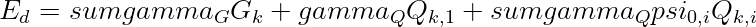
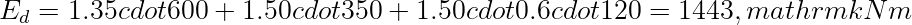
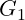
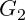
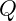
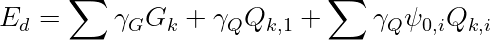
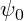
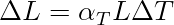

Definizione delle azioni di progetto per ponti secondo NTC ed Eurocodici
Prima delle verifiche
Le verifiche dipendono dalla corretta definizione delle azioni: permanenti, traffico, temperatura, vento, sisma, ritiro, viscosità ed eventuali azioni eccezionali.

Esempio.
Con (G=600), (Q_1=350), (Q_2=120,mathrm{kNm}), (gamma_G=1.35), (gamma_Q=1.50), (psi_{0,2}=0.6):

Riferimenti tecnici utilizzati:
- D.M. 17 gennaio 2018, NTC 2018, Capitolo 5.
- UNI EN 1991-2, Eurocodice 1: Azioni da traffico sui ponti.
Riferimenti aggiuntivi.
- UNI EN 1990, Criteri generali di progettazione strutturale.
- UNI EN 1991-1-5, Azioni termiche.
Nota StruHub.
StruHub considera la definizione delle azioni parte integrante del calcolo, non un passaggio amministrativo.
Azioni permanenti e variabili non hanno lo stesso ruolo
I permanenti definiscono lo stato di base della struttura; le variabili esplorano scenari sfavorevoli. La combinazione non è una somma neutra: attribuisce a ciascuna azione un ruolo probabilistico e meccanico.
Azioni indirette nei ponti
Temperatura, ritiro, viscosità e cedimenti non sono carichi nel senso classico. Possono però generare effetti se la struttura è iperstatica o vincolata. Per questo, nel modello, devono essere trattati come deformazioni imposte o stati iniziali, non come forze equivalenti arbitrarie.
TracciabilitÃ
Ogni risultato dovrebbe poter rispondere a tre domande: quale azione lo genera, con quale coefficiente, in quale combinazione. Senza questa tracciabilità , una verifica formalmente corretta diventa difficile da revisionare.
Nel tema di la definizione delle azioni di progetto, il punto non è ottenere un coefficiente isolato, ma costruire una catena coerente tra modello globale e verifica locale. Il carico applicato al ponte stradale o ferroviario attraversa una gerarchia resistente: soletta, traversi, travi principali, appoggi e infine sottostrutture.
Il primo controllo è l'equilibrio. Se gli effetti ripartiti non ricostruiscono l'azione globale, il modello non è accettabile. Il secondo controllo è la compatibilità : gli elementi connessi non possono deformarsi come sistemi indipendenti se la soletta o i collegamenti impongono continuità .

Rigidezze equivalenti e sensibilitÃ
La ripartizione dipende dai rapporti di rigidezza, non dai soli interassi geometrici. Un elemento molto rigido attira più domanda, mentre un elemento flessibile tende a scaricare verso gli elementi vicini. Questo vale per travi, piastre equivalenti e modelli a graticcio.

Una variazione del 20% nella rigidezza trasversale può modificare in modo significativo il coefficiente di ripartizione. Per questo l'articolo tecnico non deve limitarsi a presentare il risultato: deve spiegare quali parametri lo muovono.
Esempio di confronto. Si consideri un effetto globale (E_{tot}=1000\,\mathrm{kNm}). Un primo modello fornisce coefficienti (0.20,0.35,0.35,0.10); un secondo modello, con maggiore rigidezza trasversale, fornisce (0.24,0.29,0.29,0.18). I due risultati sono entrambi equilibrati, ma raccontano impalcati diversi.

Nel primo caso la domanda è concentrata sulle travi interne; nel secondo la distribuzione è più uniforme. La scelta progettuale deve leggere questa differenza, non solo copiare il massimo valore.
Uso nella relazione tecnica
Una relazione ben costruita dovrebbe riportare schema dell'impalcato, rigidezze equivalenti, posizione dei carichi, coefficienti ottenuti e controllo di equilibrio. Se il metodo è semianalitico, è utile affiancare un confronto con un modello graticcio o FEM semplificato.
La qualità della verifica dipende dalla qualità delle azioni. Se un€™azione è definita male, la precisione del modello strutturale diventa una falsa precisione. In questo modo il post diventa un riferimento tecnico: non propone soltanto un numero, ma insegna a giudicarlo.
Dal modello globale alla verifica locale. Nei temi di impalcato, sezioni composte e azioni di progetto, il passaggio più importante è collegare una grandezza globale a un controllo locale. Un momento globale lungo l'impalcato non è ancora una verifica di fibra; un carico da traffico non è ancora una tensione; un coefficiente di ripartizione non è ancora una domanda resistente. Il calcolo diventa affidabile quando ogni trasformazione è esplicita.
La sequenza tipica è: definizione dell'azione, scelta dello schema resistente, calcolo dell'effetto globale, ripartizione o trasformazione sezionale, verifica della fibra o dell'elemento. Saltare uno di questi passaggi produce risultati difficili da revisionare.
Tracciabilità delle combinazioni. Ogni valore dovrebbe conservare l'origine. Se una sezione ha (M_{max}=950\,\mathrm{kNm}), la relazione deve indicare se deriva da traffico, temperatura, fase costruttiva, ritiro o combinazione sismica. In assenza di questa informazione il dato è numericamente utile ma tecnicamente debole.
Una forma pratica di archiviazione è associare a ogni effetto tre campi: valore, combinazione governante e posizione. Per gli inviluppi:

Questa scrittura chiarisce che il massimo non è astratto: è prodotto da una combinazione precisa.
Controllo delle rigidezze. Quando si lavora con ripartizioni, sezioni composte o fasi costruttive, la rigidezza è il parametro più influente. Una rigidezza sbagliata può produrre una distribuzione apparentemente equilibrata ma fisicamente non corretta. Per questo, prima della verifica, conviene riportare le proprietà principali: area, inerzia, modulo elastico, coefficiente di omogeneizzazione e fase resistente.
Per una sezione composta, ad esempio, una stessa azione può produrre tensioni diverse se applicata prima o dopo la maturazione della soletta. Il valore finale è la somma di contributi nati in tempi diversi:

La notazione evidenzia che ogni contributo ha proprietà resistenti proprie.
Esempio di lettura critica. Si consideri un impalcato con quattro travi. Un modello semplificato fornisce coefficienti (0.18,0.32,0.32,0.18), mentre un modello più rigido trasversalmente fornisce (0.22,0.28,0.28,0.22). Entrambi rispettano l'equilibrio, ma il secondo distribuisce maggiormente verso le travi laterali. Se la verifica locale di una trave laterale è vicina al limite, questa differenza non è accademica.
Scrittura da riferimento tecnico. Il testo deve accompagnare il lettore dalla causa all'effetto: quale azione entra, come viene distribuita, quale proprietà resistente la trasforma in tensione o sollecitazione, quale limite viene controllato. Questa catena rende l'articolo consultabile anche a distanza di tempo.
Azioni permanenti, variabili e accidentali. La definizione delle azioni di progetto per ponti richiede una classificazione ordinata. I pesi propri strutturali, indicati spesso come

, comprendono travi, soletta, pulvini e parti resistenti. I permanenti non strutturali,
, includono pavimentazioni, barriere, cordoli, impermeabilizzazioni e impianti. Le azioni variabili,
, comprendono traffico, vento, temperatura, frenatura, centrifuga, neve dove rilevante e azioni di cantiere.La combinazione fondamentale allo SLU puo essere rappresentata in forma generale come:

La formula serve a ricordare che non tutte le azioni variabili sono massime contemporaneamente. Il coefficiente

riduce le variabili accompagnatrici in funzione della probabilita di concomitanza. La corretta identificazione dell'azione dominante e una scelta tecnica, non un passaggio automatico.Per i ponti, i carichi da traffico hanno modelli specifici. La norma UNI EN 1991-2:2005 definisce modelli di carico per traffico stradale e ferroviario; il D.M. 17 gennaio 2018, Capitolo 5, fornisce il quadro nazionale per i ponti. Quando si parla di azioni su ponti italiani, questi riferimenti devono essere citati esplicitamente.
Azioni orizzontali e effetti cinematici. Oltre ai carichi verticali, un ponte riceve azioni longitudinali e trasversali. Frenatura e avviamento producono forze orizzontali sull'impalcato; vento e sisma possono governare sottostrutture e appoggi; temperatura, ritiro e viscosita generano deformazioni imposte. Una variazione termica uniforme produce:

Se gli appoggi consentono lo spostamento, l'effetto si manifesta come movimento; se lo impediscono, genera azioni vincolari. Questa distinzione e decisiva nella modellazione: la stessa azione termica puo essere quasi innocua in uno schema libero e severa in uno schema bloccato.
La progettazione deve quindi costruire una matrice azioni-schemi: ogni azione va applicata allo schema resistente corretto, nella fase corretta e con la combinazione corretta. Un post tecnico di riferimento dovrebbe far emergere proprio questa disciplina: non un elenco di carichi, ma una catena che collega origine fisica, modello, combinazione e verifica.
Riferimenti normativi e bibliografici utilizzati:
- D.M. 17 gennaio 2018, "Aggiornamento delle Norme tecniche per le costruzioni", Ministero delle Infrastrutture e dei Trasporti, Supplemento ordinario alla Gazzetta Ufficiale n. 42 del 20 febbraio 2018.
- Circolare C.S.LL.PP. 21 gennaio 2019, n. 7, "Istruzioni per l'applicazione dell'Aggiornamento delle Norme tecniche per le costruzioni di cui al decreto ministeriale 17 gennaio 2018".
- UNI EN 1990:2006, Eurocodice - Criteri generali di progettazione strutturale.
- UNI EN 1991-2:2005, Eurocodice 1 - Azioni sulle strutture - Parte 2: Carichi da traffico sui ponti.
- UNI EN 1992-1-1:2015, Eurocodice 2 - Progettazione delle strutture di calcestruzzo.
- UNI EN 1993-1-1:2014, Eurocodice 3 - Progettazione delle strutture di acciaio.
- UNI EN 1994-2:2006, Eurocodice 4 - Progettazione delle strutture composte acciaio-calcestruzzo - Ponti.
- UNI EN 1997-1:2013, Eurocodice 7 - Progettazione geotecnica - Parte 1: Regole generali.
- UNI EN 1998-2:2011, Eurocodice 8 - Progettazione delle strutture per la resistenza sismica - Ponti.